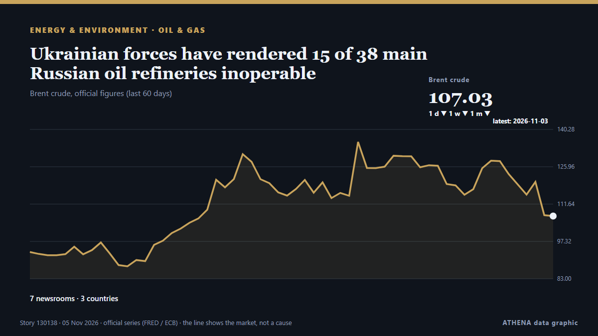

Energía, recursos y medio ambiente
PatrocinadoPresentado por  Cybernetics and Artificial Intelligence Lab Welcome to the Cybernetics and Artificial Intelligence Laboratory, established at the Department of Business Administration of the National and Kapodistrian University of Athens. The lab is headed by Professor Dimitrios Thomakos. The lab aims to do research that can be published in top venues. Our research uses tools and methods of Artificial Intelligence, and lies in the following areas: - Forecasting - Decision making - Cyber security - Finance We are always looking forward to collaborating with exceptional students!
Cybernetics and Artificial Intelligence Lab Welcome to the Cybernetics and Artificial Intelligence Laboratory, established at the Department of Business Administration of the National and Kapodistrian University of Athens. The lab is headed by Professor Dimitrios Thomakos. The lab aims to do research that can be published in top venues. Our research uses tools and methods of Artificial Intelligence, and lies in the following areas: - Forecasting - Decision making - Cyber security - Finance We are always looking forward to collaborating with exceptional students!
Los titulares se muestran en inglés, tal como se publicaron.

Petróleo y gasUkrainian forces have rendered 15 of 38 main Russian oil refineries inoperable
Attacks by Ukrainian forces have shut down 15 major Russian refineries and forced 12 others to cut production, triggering domestic fuel supply shortages. de Ukrainska Pravda (English)
| 23 oct | 65 |
|---|---|
| 24 oct | 38 |
| 25 oct | 69 |
| 26 oct | 79 |
| 27 oct | 113 |
| 28 oct | 89 |
| 29 oct | 76 |
| 30 oct | 93 |
| 31 oct | 39 |
| 1 nov | 55 |
| 2 nov | 117 |
| 3 nov | 94 |
| 4 nov | 78 |
| 5 nov | 54 |
Water supply disruptions return in Kyiv, metro service temporarily suspended due to power fluctuations
Kyivvodokanal, the municipal utility responsible for water supply and wastewater services in Kyiv and the surrounding region, said at around 1:30 p.m. local time that power outages at its facilities… de Kyiv Independent
Billionaire industrialist Dangote launches $2.5 billion Namibia fuel storage project
WALVIS BAY, Namibia: Nigerian billionaire Aliko Dangote launched a $2.5 billion fuel storage and regional pipeline project in Namibia’s Walvis Bay on Wednesday that could reshape the fuel supply… de Arab News
Blue tsunami: Victory washes over Democrats in midterms
Even voters in areas that have repeatedly backed US President Donald Trump are no longer on board with the Republican Party, writes Jackie Fox. de RTÉ News
Oil and European Gas Prices Fall After Democrats’ Midterm Gains in US
Oil and European natural gas prices fell sharply after Democrats made major gains in the US midterm elections, raising hopes that Washington could seek an end to the conflict with Iran. de Greek Reporter
Armenian PM Pashinyan to visit Türkiye to attend COP31
Pashinyan confirms plans to visit Antalya after receiving invitation from Turkish President Erdogan in September. de Anadolu Agency (English)
Gaza turns rubble into power with homemade wind turbines
Above a maze of tents in a crowded displacement camp in Gaza, homemade wind turbines made from scrap metal and salvaged debris spin in the sea breeze, bringing electricity to struggling Palestinians. de Al-Monitor
Brent crude oil falls under $100 a barrel after Trump's midterm defeats
Oil prices experienced a decline of over 1% after hitting six-month peaks, primarily due to geopolitical unrest in Saudi Arabia. de Times of India
One of Three Russian Tankers Remains On Course for the US
Only one of the three reported tankers that were sailing to the U.S. with Russian diesel appears to be still heading for the Atlantic coast.The issuing of General License 135 on October 9, which… de MarineLink
TotalEnergies Inks 15-Year LNG Supply Deal with China's Jiangsu Guoxin
TotalEnergies has signed an agreement with China's Jiangsu Guoxin Group to supply 900,000 tons of liquefied natural gas (LNG) annually for 15 years, with deliveries expected to begin in 2028… de Offshore Engineer
Antalya green zone to serve as COP31 climate action hub
Türkiye is creating a 582,000-square-meter Green Zone in the southern province of Antalya for the COP31 climate summit to connect everyday citizens, entrepreneurs, and businesses through actionable… de Hürriyet Daily News
Singapore to toughen haze law with arrest powers, bigger fines
SINGAPORE: Singapore’s parliament moved on Wednesday to toughen its anti-haze law with arrest powers, bigger fines and potential restrictions on companies linked to transboundary air pollution from… de New Straits Times
US election results could put renewables back into focus, executive says
The US midterm election results has brought back hope for renewables after the Trump administration's "attacks" on clean energy, according to a sustainable energy executive. de The National
Brazil Factory Prices Jump 4.34% in a Year
Brazil's producer prices rose 4.34% in the year to September and 1.54% in the month, well above forecasts, a warning for inflation and interest rates. de The Rio Times
CVR Energies set to buy two Marathon refineries
CVR Energy has entered into a definitive agreement with subsidiaries of Marathon Petroleum to acquire Marathon’s St. de Ship.Energy
Borr Drilling Prospector 5 Rig Incident Update
Borr Drilling Limited provides an update on the Prospector 5 incident offshore Gabon, first announced by the Company on October. de Cyprus Shipping News
Six measures could save 1.6m lives a year: WHO
The WHO report said implementing six measures could deliver a 'triple dividend' of healthier people, lower emissions and stronger economies. de Free Malaysia Today
Greece Opens Restored 11th-Century Byzantine Church to Public
Greece reopens the restored 11th-century Byzantine church of Maximianoupolis near Komotini following a €1.5 million restoration project. de Greek City Times
Africa: COP17 - Nations Chart 'Yerevan Pathway' to Speed Up Action for Nature
[UN News] At the halfway mark to 2030, countries meeting in Armenia have agreed a roadmap to accelerate action for nature, after a global review found the world off track to meet its biodiversity… de AllAfrica
Rich countries fall far short on climate adaptation funding, UN says
Countries are preparing to meet in Turkey from Nov 9 to 20 for the next round of climate talks. de The Straits Times
Aramco exploring expansion of East-West Pipeline that avoids Hormuz
Aramco is exploring alternative export routes and additional overseas storage capacity, including a possible expansion of the East-West Pipeline, which transports Saudi crude to Red Sea export hubs. de Free Malaysia Today
EU tells Turkey to ‘normalise relations’ with Republic of Cyprus
The European Commission on Wednesday called on Turkey to “normalise” its relations with the Republic of Cyprus, as it presented its annual report on the country’s progress towards accession to the… de Cyprus Mail
Zelensky urges after-strike repairs
Ukrainian President Volodymyr Zelensky stated on Wednesday that he has instructed relevant teams and agencies to introduce additional measures to speed up repairs and power restorations following the… de AzerNews
New Jersey governor warns port operators against importing Russian diesel
'As a Navy veteran, I cannot let that stand unchallenged. de Anadolu Agency (English)
Brazil wraps up COP30 with fossil fuel, forest roadmaps, urging shift from talks to action
'We don't need more negotiations. What we need is for governments to start taking action,' says COP30 president Correa do Lago, who led last November's UN climate summit in Belem. de Rappler
Liars Share New Track, ‘Beat Creep Some Eyes’
It's the second cut to be unveiled from forthcoming album A Ban On Plastic Bag Bans Photo by Clemens Habicht Liars have shared a new song, titled 'Beat Creep Some Eyes'. de The Quietus
Türkiye, Azerbaijan determined to deepen ties, Turkish minister says
Turkish institutions, companies continue to contribute to reconstruction efforts in territories liberated from occupation, while Ankara, Baku remain committed to 'One nation, two states' principle… de Anadolu Agency (English)
Shell to sell NWS LNG stake to XRG
UK-based LNG giant Shell has agreed to sell its stake in the Woodside-led North West Shelf LNG project in Western Australia to Adnoc’s investment unit XRG. de LNG Prime
Cyclone Murasu kills 2, damages 312 houses in India's Andhra Pradesh
NEW DELHI, Nov 4, (Xinhua): At least two people were killed in the southern Indian state of Andhra Pradesh after severe cyclonic storm Murasu battered the coastal area, official... de Arab Times
Indonesia to push for ASEAN haze center ratification at summit
The Ministry of Foreign Affairs will push for ratification of the agreement establishing the ASEAN Coordinating Centre ... de Antara (English)
Avaada Electro Achieves Major Milestone with 7.1 GW of ALMM-Enlisted TOPCon Solar Cell Manufacturing Capacity
MNRE’s latest notification recognises 7,117 MW of N-type TOPCon solar cell manufacturing capacity at Avaada Electro’s Butibori facility in Maharashtra Advanced G12 TOPCon technology with… de Laotian Times
Oil output has grown by 600,000bpd since PIA — NNPC
…Company targets two million bpd production by 2027 By Obas Esiedesa, Abuja Nigeria’s crude oil production has increased by 600,000 barrels per day (bpd), from about 1.2 million bpd to 1.8 million… de Vanguard
Wärtsilä Helps Chevron Cut Methane Emissions with LNG Carriers Upgrade
Wärtsilä has completed the conversion of one engine on each of three LNG carriers operated by Chevron Transport Corporation from dual-fuel to spark gas operation, as part of a project aimed at… de MarineLink
Blue Moon agrees to sell Norwegian unit to ACG for $220m
Blue Moon Metals has agreed to sell its Norwegian subsidiary, which holds the Nussir copper mine, to ACG Metals in an all-share deal valued at $220m. de Mining Technology
CMA CGM, Nike and Gemadept officially launch electric barge in Vietnam
CMA CGM, Nike and Vietnamese port operator Gemadept have officially launched a fully electric container barge solution in Vietnam, connecting inland cargo operations with the Gemalink deep-sea… de Container News